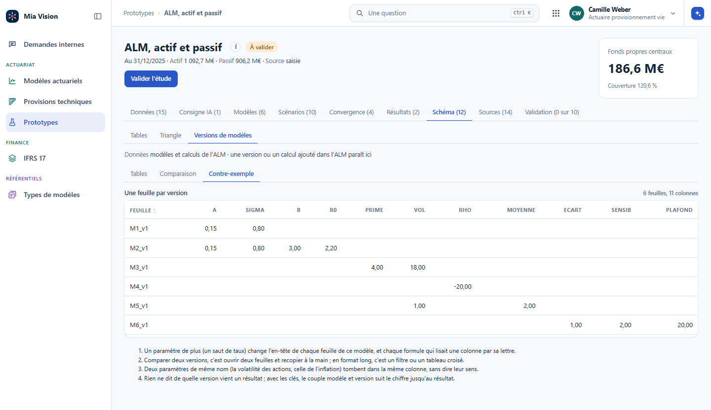
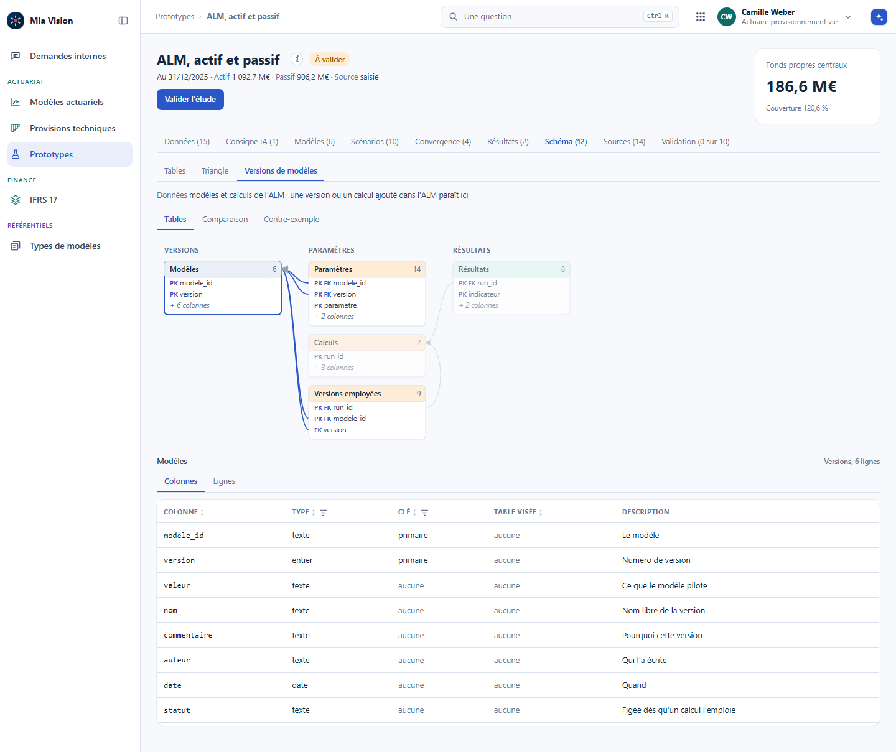
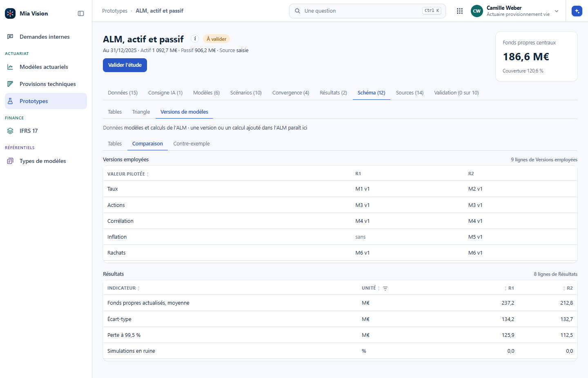
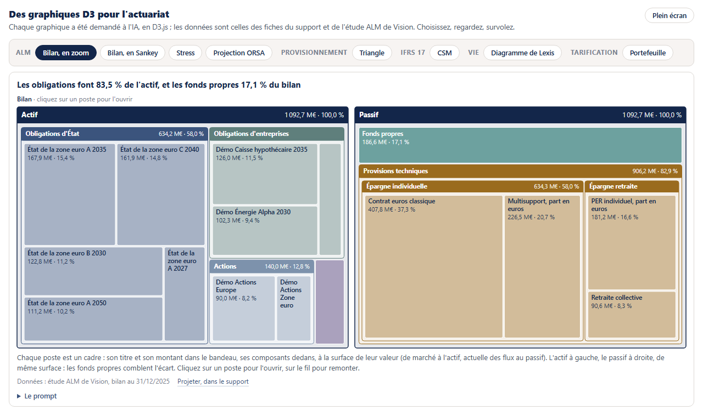
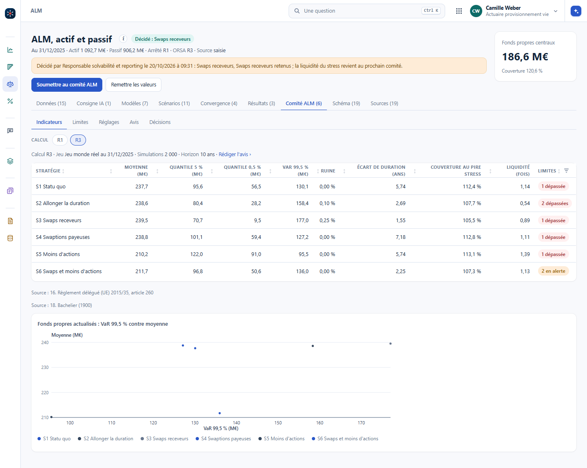
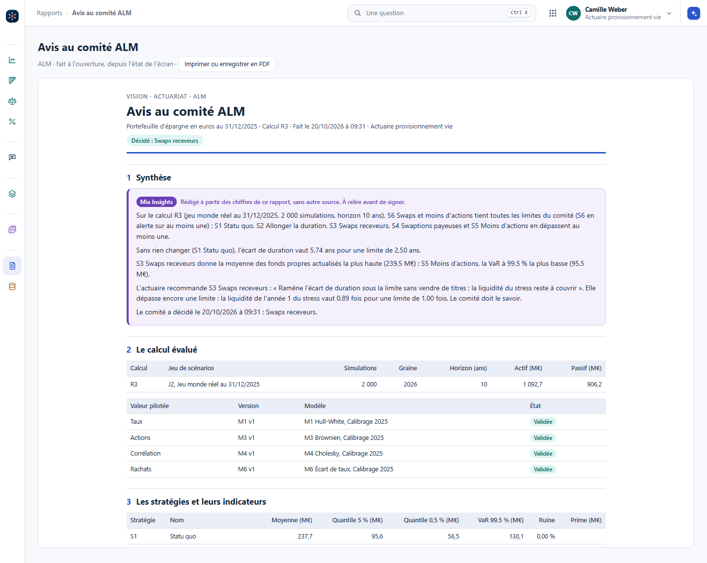

Communication et tableaux de bord
Des résultats rangés et retrouvables, puis ce qu'on en tire pour ceux qui lisent : le tableau de bord, le rapport, les diapositives, la note, la documentation.
- Structurer les résultats, les restituer visuellement
- Construire et automatiser des tableaux de bord
- Les LLM pour enrichir les rapports
- Transparence, simplicité, clarté
- 3.1Ranger et tracer les résultats
- Versionner les résultats
- Le hasard se pilote : graines et trajectoires
- Tracer : des jeux d'entrées et leurs résultats
- 3.2Restituer
- Le message, la note, les graphiques
- Tableau de bord, rapport, diapositives
- 3.3Documenter et nommer
- Documenter : la machine écrit, vous relisez
- Nommer les objets du métier : l'ontologie, le self-BI
- 3.4Atelier : de l'exécution au tableau de bord et à la note
3.1 Ranger et tracer les résultats
- 3.1.1Versionner les résultats
- 3.1.2Le hasard se pilote : graines et trajectoires
- 3.1.3Tracer : des jeux d'entrées et leurs résultats
3.1.1 Versionner les résultats
Le code se versionne de plus en plus. Les résultats, rarement. Ils vivent dans des fichiers dont le nom porte l'histoire : provisions_v3_final_OK_bis.xlsx. Trois mois plus tard, personne ne sait lequel a servi, ni avec quelles hypothèses. C'est le maillon qui manque, et c'est celui qu'un contrôleur regarde.
- Une exécution, et tout ce qui la décrit
- Le registre des exécutions
- Les modèles aussi se versionnent en tables
- Comparer deux exécutions, pas deux fichiers
- La version du code : Git
- Ce qu'il faut garder
Une exécution, et tout ce qui la décrit
Un résultat seul ne veut rien dire. Ce qui a une valeur, c'est l'ensemble de ce qui a produit le résultat, gardé ensemble :
Quelles extractions, de quelle date, avec quelle empreinte. Pas « la base clients », mais le fichier exact.
La version précise : l'identifiant du commit, ou le nom de la version publiée. Pas « la version de mars ».
Taux, table, seuils, graine aléatoire. Celles qu'on déclare à un seul endroit, comme le montre le chapitre Organiser les algorithmes.
Les tableaux et les figures, dans un dossier daté qui ne se réécrit pas.
En pratique, un dossier par exécution, nommé par la date et l'objet, et dedans un petit fichier qui note les quatre points ci-dessus. Cinq lignes de code à écrire une fois, et le calcul les écrit tout seul à chaque lancement.
Le registre des exécutions
Au dessus des dossiers, une table d'une ligne par exécution : la date, l'objet, la version du code, les hypothèses qui changent d'une fois sur l'autre, et le résultat principal. Elle se lit d'un coup d'œil et elle répond aux deux questions qu'on pose toujours : laquelle a servi pour l'arrêté, et qu'est-ce qui a changé depuis la précédente.
Un exemple sur le triangle public de Taylor et Ashe (1983), en unités non monétaires :
| Exécution | Objet | Code | Hypothèses | Ultime | Provision |
|---|---|---|---|---|---|
| 2026-03-14 09:20 | Taylor-Ashe, chain ladder | a3f91c2 | facteurs pondérés, sans queue | 53 038 946 | 18 680 856 |
| 2026-03-14 16:05 | Taylor-Ashe, chain ladder | a3f91c2 | facteurs pondérés, queue 1,02 | 54 099 725 | 19 741 635 |
| 2026-03-15 11:40 | Taylor-Ashe, chain ladder | a3f91c2 | facteurs pondérés, queue 1,05 | 55 690 893 | 21 332 803 |
Le code ne bouge pas, une seule hypothèse change : la queue à 1,02 ajoute 1 060 779 à la provision, la queue à 1,05 en ajoute 2 651 947. L'ultime et la provision sont deux grandeurs différentes, et le registre les garde toutes les deux. Une correction de code se lit de la même façon : un identifiant de commit qui change, des hypothèses qui ne bougent pas, et l'écart chiffré. C'est exactement ce qu'on cherche à savoir, et c'est illisible dans une arborescence de fichiers nommés à la main.
Les modèles aussi se versionnent en tables
Le registre range les exécutions. Les modèles se rangent de la même façon, même si ce n'est pas toujours intuitif. Une table des modèles, une ligne par version : le numéro du modèle, sa version, la valeur qu'il pilote, un nom, un commentaire libre comme « calibration sur telle période », l'auteur, la date, et le statut, figée dès qu'un calcul l'emploie. Les paramètres en format long : le modèle, la version, le paramètre, sa valeur, son unité. Puis les calculs, les versions que chacun emploie, et les résultats, une ligne par calcul et par indicateur. Des clés relient le tout : un résultat dit de quel calcul il vient, et un calcul de quelles versions.
Le contre-exemple est celui qu'on fait spontanément : une feuille par version, les paramètres en colonnes. Un paramètre de plus change l'en-tête de chaque feuille et chaque formule qui lisait une colonne par sa lettre. Comparer deux versions, c'est ouvrir deux feuilles et recopier à la main. Et rien ne dit de quelle version vient un résultat.
Les modèles aussi se versionnent en tables suite


Les modèles aussi se versionnent en tables suite
Dans Vision : l'ALM, onglet Schéma, puis Versions de modèles (#/alm?ong=schema&sch=versions). Une version ou un calcul ajouté dans l'ALM y paraît aussitôt. Les versions elles-mêmes se créent dans l'onglet Modèles, au chapitre Projeter.
Comparer deux exécutions, pas deux fichiers
La question utile n'est jamais « les fichiers sont-ils différents », c'est « quels chiffres ont bougé, de combien, et pourquoi ». Un petit script de comparaison, qui prend deux dossiers d'exécution et sort les écarts ligne à ligne au delà d'un seuil, remplace le collage dans un tableur.
Quand les résultats sont en table, la comparaison est un tableau croisé. Dans Vision, deux calculs de l'ALM côte à côte : au dessus, les versions que chacun emploie ; en dessous, les indicateurs. R1 et R2 ne diffèrent que par le modèle de taux et l'inflation des frais, et la table le montre avant les chiffres.
Comparer deux exécutions, pas deux fichiers suite

Comparer deux exécutions, pas deux fichiers suite
Un écart s'explique par une seule cause à la fois. Changer les hypothèses et le code en même temps, puis chercher d'où vient la différence, coûte toujours plus cher que deux exécutions séparées.
La version du code : Git
La version du code est liée à celle des résultats : retrouver un résultat, c'est retrouver le jeu d'entrées qui l'a produit et le code qui l'a calculé. Pour le code, l'outil existe, et il ne demande presque rien : Git.
Git a été créé en 2005 par Linus Torvalds, l'auteur de Linux, pour faire avancer le noyau à des milliers de mains. GitHub et GitLab sont des plateformes construites par-dessus : elles hébergent les dépôts, montrent l'historique, accueillent les relectures ; Microsoft a racheté GitHub en 2018 pour 7,5 milliards de dollars. Chaque enregistrement, un commit, garde l'état de tout le projet sans tout recopier : un fichier qui ne change pas n'est pas stocké deux fois, et ceux qui changent sont compressés par différences. On retrouve tout l'historique, et l'on revient à n'importe quelle version.
Une version qui compte se nomme : une étiquette, et sur GitHub une release, « 1.0 » ou « Arrêté 2025 ». Le registre des exécutions cite ce nom ; dans trois ans, on saura quel code relancer pour retrouver le chiffre.
Une extraction datée et son empreinte. Elles se gardent à part, jamais dans le dépôt du code.
Les plus simples à versionner : une ligne par jeu d'entrées, qu'on crée à la main, comme au chapitre La traçabilité.
Un commit pour chaque étape, une étiquette pour la version qui sert, et les versions des paquets.
Les trois avancent chacun de leur côté : un nouveau jeu de paramètres ne demande pas de nouvelle version du code, et une correction du code ne touche pas aux jeux. Le résultat porte les trois identifiants.
La version du code : Git suite
Les versions des paquets. Un paquet R ou Python qui change de version peut casser un calcul, ou changer un chiffre sans rien dire. La bonne pratique : écrire le numéro de chaque paquet, dans le dépôt, à côté du code, avec requirements.txt et des == en Python, renv.lock en R. Les anciennes versions restent disponibles sur PyPI et dans les archives du CRAN : avec ce fichier, on remonte l'environnement de l'époque.
Au quotidien, quelques gestes suffisent, et le reste s'apprend le jour où il sert.
- Enregistrer un état dès qu'une étape est validée, avec un message qui dit ce qui change et pourquoi.
- Poser une étiquette sur la version qui part en production, ou qui sert pour un arrêté, et la pousser :
git pushn'envoie pas les étiquettes, il fautgit push origin <étiquette>. - Travailler sur une branche quand on essaie quelque chose, pour pouvoir jeter sans rien casser.
- Ne jamais mettre les données dans le dépôt : le code et les hypothèses oui, les extractions non.
Et si l'on n'a qu'Excel ? La philosophie se reprend telle quelle. Un onglet des paramètres, une ligne par jeu ; une cellule ou un onglet qui dit la version du calcul, son numéro, sa date, ce qui a changé ; les résultats rangés avec l'identifiant du jeu et la version du calcul. Données, paramètres et calcul se tiennent à part, comme avec du code. Les onglets Jeux d'entrée et Résultats du classeur d'exemple en montrent la forme.
La version du code : Git suite
Une IA propose vite une variante : un autre lissage, une autre queue de triangle, un autre découpage de tranches. Sans exécutions tracées, ces variantes deviennent un amas de fichiers dont on ne sait plus lequel dit quoi. Avec, chaque proposition devient une ligne de registre et un écart chiffré, c'est-à-dire une décision documentée.
Retrouvez le fichier de résultats qui a servi. Pouvez-vous dire quelle version du code l'a produit, avec quelles hypothèses, et à partir de quelle extraction ? Chronométrez le temps qu'il vous faut.
Ce qu'on trouve souvent
Le fichier se retrouve en quelques minutes, les hypothèses dans un courriel, et la version exacte du code presque jamais. C'est le trou que ce chapitre ferme, et il se ferme avec cinq lignes de code au bon endroit.
Ce qu'il faut garder
- Un résultat se garde avec ses entrées, sa version de code, ses hypothèses et sa graine.
- Données, paramètres et code se versionnent chacun à part, même dans Excel ; le résultat porte les trois identifiants, et les versions des paquets s'écrivent.
- Un registre d'une ligne par exécution répond aux deux seules questions qu'on pose.
- Les modèles et leurs paramètres se versionnent en tables liées, pas en une feuille par version.
- On compare des exécutions, on ne compare pas des fichiers, et on ne change qu'une chose à la fois.
3.1.2 Le hasard se pilote : graines et trajectoires
Un calcul stochastique se versionne comme les autres, avec une pièce de plus : son hasard. Une graine notée et des trajectoires gardées, et le chiffre se retrouve à l'identique, trois ans après, devant un contrôleur.
- Le hasard se pilote
- L'exemple qui paie tout de suite : les simulations
- Ce qu'il faut garder
Le hasard se pilote
Un auditeur peut demander de reproduire à l'identique une trajectoire Monte Carlo de l'année passée. Sans contrôle du tirage, c'est impossible, et c'est rédhibitoire en revue. Trois niveaux, du plus fragile au plus sûr.
- Une graine globale
Posée en tête de script. Reproductible tant que rien d'autre ne change, donc fragile : déplacer deux lignes change la trajectoire. Ça ne tient pas pour un calcul réglementaire.
- Un générateur explicite
Le générateur est créé une fois et passé en argument aux fonctions qui tirent. Modifier un calcul ne déplace plus la trajectoire des autres. C'est le minimum en production.
- Les trajectoires enregistrées
Le tirage est fait une fois, écrit sur disque, rechargé ensuite. L'auditeur rejoue exactement, et on peut réutiliser les mêmes trajectoires dans un autre calcul.
L'exemple qui paie tout de suite : les simulations
Le réflexe courant sur un calcul Monte Carlo : lancer cent mille simulations, garder la moyenne, jeter le reste. Deux jours plus tard, quelqu'un demande la queue à 99,5 %, la contribution d'une branche, ou le même calcul sur un sous-portefeuille. Il faut tout relancer, avec un autre tirage, donc d'autres chiffres, donc une conversation sur l'écart entre les deux.
Garder les simulations change ce rapport. Une table longue, bien rangée, et toutes ces questions se répondent après coup, sans relancer, sur exactement le même aléa.
L'exemple qui paie tout de suite : les simulations suite
Une ligne par sinistre simulé, pas une matrice
La façon de ranger les tirages se décide au moment où on écrit la simulation, et elle décide de tout ce qu'on pourra en faire. Le bon réflexe est le même que pour les données réelles : une ligne par événement, et le grain écrit noir sur blanc.
| Colonne | Ce qu'elle porte |
|---|---|
| execution | L'identifiant de l'exécution, celui du registre, qui donne la graine, le code et les hypothèses |
| sim_annee | Le numéro de l'année simulée, de 1 à n |
| sim_sinistre | Le numéro du sinistre dans cette année ; leur nombre vient du tirage de fréquence |
| segment | La branche, le produit, la garantie : ce sur quoi on voudra agréger plus tard |
| montant | Le montant du sinistre, tiré dans la loi de sévérité |
Le modèle fréquence puis sévérité se lit directement dans cette table : le nombre de lignes d'une année est le tirage de fréquence, chaque ligne porte un tirage de sévérité. Une charge annuelle est une somme par année simulée, une charge par branche une somme par année et par segment, et un seuil de grands sinistres un filtre sur une colonne.
L'exemple qui paie tout de suite : les simulations suite
Une ligne par année, et en colonnes les sinistres : sinistre 1, sinistre 2, et ainsi de suite. C'est ce qu'on écrit spontanément en venant du tableur, et c'est inefficace sur tous les plans.
- Le nombre de sinistres varie d'une année à l'autre : la matrice se dimensionne sur le pire cas et se remplit de vide.
- Ajouter une dimension, la branche, l'exercice de survenance, le développement, demande une matrice de plus.
- Filtrer les sinistres au dessus d'un seuil, ou compter ceux d'une branche, oblige à parcourir toutes les colonnes.
- Les colonnes n'ont pas de sens par elles-mêmes : « sinistre 7 » n'est pas une grandeur, c'est un rang.
Le même tirage, rangé par événement. Tout ce qui précède devient une opération standard, et le fichier se compresse très bien parce que chaque colonne est homogène.
- Rien de vide : on écrit les sinistres qui existent.
- Une dimension de plus est une colonne de plus, pas une structure de plus.
- Les agrégations, les filtres et les quantiles sont des regroupements, écrits en une ligne.
- Le grain est explicite, donc deux personnes lisent la même chose.
L'exemple qui paie tout de suite : les simulations suite
Rangée ainsi, la table se garde en fichiers colonnes partitionnés par exécution, ou en base dès que plusieurs personnes doivent la lire. Sa taille se calcule avant de lancer. Un portefeuille de 50 000 contrats auto à 10 % de fréquence donne 5 000 sinistres par année simulée : sur cent mille années, 500 millions de lignes, plusieurs gigaoctets même en fichiers colonnes. Pour les grands sinistres, une dizaine par an, la même durée donne un million de lignes. La table longue complète se garde donc pour les graves, ou sur un nombre d'années plus petit.
VaR et TVaR à tous les seuils voulus, sans relancer, et sur le même tirage que la moyenne déjà publiée.
Changer une hypothèse en gardant la graine isole l'effet de l'hypothèse. Comparer deux exécutions aux tirages différents mélange l'effet et le bruit.
Quelle branche porte la queue, quelles années extrêmes et pourquoi : la réponse est dans la table, pas dans un nouveau calcul.
L'exemple qui paie tout de suite : les simulations suite
Combien d'années simuler
Dix mille, cent mille : c'est la plage qu'on rencontre souvent. Le bon nombre ne se décrète pas, il se calcule avec l'erreur relative, comme le montre la suite. Ce qui justifie d'aller plus loin est le plus souvent un quantile extrême, et dans ce cas il vaut mieux augmenter les tirages là où ils comptent que partout.
L'exemple qui paie tout de suite : les simulations suite
Tirer mieux plutôt que tirer plus : Sobol et Halton
Un tirage pseudo-aléatoire laisse des trous et des paquets : par hasard, certaines zones de l'espace sont visitées trois fois, d'autres pas du tout. Les suites à faible discrépance, Sobol et Halton, remplacent ce hasard par des points construits pour se répartir régulièrement. Même nombre de tirages, couverture plus homogène, donc erreur plus faible.
L'ordre de grandeur du gain : l'erreur d'un Monte Carlo ordinaire décroît comme la racine du nombre de tirages, celle d'une suite bien construite décroît presque comme le nombre de tirages lui-même. Sur un calcul régulier et peu dimensionné, la même précision s'obtient avec beaucoup moins de simulations, ou la même simulation devient nettement plus précise.
- La dimension. Le gain se dégrade quand chaque simulation tire beaucoup de variables aléatoires. Sobol tient mieux que Halton quand la dimension monte ; Halton se dégrade vite au delà de quelques dizaines de dimensions, sauf version brouillée.
- La régularité. Sur une espérance, le gain est net. Sur un quantile extrême, qui dépend du franchissement d'un seuil, il est beaucoup plus faible.
- L'intervalle de confiance. Une suite déterministe n'en fournit pas. On le retrouve en brouillant la suite et en rejouant quelques réplications : la dispersion entre réplications donne l'erreur.
- Le nombre de points. Une suite de Sobol s'équilibre par puissances de deux : arrêter à 100 000 au lieu de 131 072 abîme une partie du gain.
L'exemple qui paie tout de suite : les simulations suite
Côté rangement, cela change une ligne de l'exécution : ce n'est plus seulement une graine qu'on écrit, c'est la suite utilisée, son brouillage et son décalage. Sans ces trois éléments, la trajectoire ne se rejoue pas, et c'est exactement ce que demandera l'auditeur.
Le gain se voit dans Vision, dans l'ALM, avec ce qu'un générateur ne dit pas : sa période. C'est le chapitre Monte-Carlo : un générateur n'est jamais aléatoire.
L'exemple qui paie tout de suite : les simulations suite
La convergence se regarde, et se calcule
Les deux, et pas l'un sans l'autre. À l'œil, la moyenne cumulée en fonction du nombre de tirages, avec autour la bande à deux erreurs standards : on voit la courbe se poser, et on voit la bande se resserrer. C'est ce graphique qui convainc en réunion.
Le chiffre, lui, décide. L'erreur standard de la moyenne vaut l'écart type des tirages divisé par la racine du nombre de tirages, \(\sigma/\sqrt{n}\). La demi-largeur de l'intervalle à 95 % vaut \(1{,}96\,\sigma/\sqrt{n}\). Rapportée à la moyenne, elle donne l'erreur relative, et c'est elle qui sert de critère d'arrêt : on simule jusqu'à passer sous le seuil qu'on s'est fixé, un pour cent par exemple.
Diviser l'erreur par deux demande quatre fois plus de simulations : la précision coûte cher, et elle coûte de plus en plus cher. Et un quantile extrême converge bien plus lentement qu'une moyenne, parce que son erreur dépend du nombre de tirages tombés dans la queue et de la densité à cet endroit : une VaR à 99,5 % demande un tout autre budget de simulations que l'espérance, sur le même modèle.
Ce que l'exécution écrit, du coup : la graine, le nombre de tirages, l'erreur relative atteinte sur les grandeurs publiées. Trois lignes, et la question « combien de simulations avez-vous lancées, et avec quelle précision » a sa réponse sans que personne ait à chercher.
Ce qu'il faut garder
- Le hasard se pilote : la graine fait partie de l'exécution, comme le code et les hypothèses.
- Pour un calcul réglementaire, les trajectoires s'enregistrent, pas seulement le résultat.
3.1.3 Tracer : des jeux d'entrées et leurs résultats
La traçabilité de tout se voit dans la plateforme. D'un point de vue données, ce n'est pas si compliqué : avoir en tête les entrées, et stocker les sorties en conséquence. Un jeu d'entrées donne des résultats. Le reste est une affaire de rangement, et c'est là que tout se perd.
- Le contre-exemple : le nom du fichier porte les entrées
- Séparer les entrées et les sorties
- Un jeu d'entrées par ligne, ses résultats par identifiant
- Des exemples, du provisionnement à la vie
- La même chose dans Excel
- Questions
- Ce qu'il faut garder
Le contre-exemple : le nom du fichier porte les entrées
tarif_auto_v3_final_VRAIMENT_final_inflation2_sans2020.xlsx
En non-vie, on met des suffixes et des préfixes aux fichiers Excel pour dire « je teste telle chose ». Ce nom porte trois entrées : une version, un indice d'inflation, une année retirée. Six mois plus tard, personne ne sait ce que voulait dire « inflation2 », ni laquelle des versions finales a servi. Au bout d'un moment, tout le monde est perdu, même la personne qui a nommé le fichier.
Séparer les entrées et les sorties
Structurer, c'est d'abord séparer les données d'entrée et les sorties. Dans les entrées d'une calibration, on précise chaque paramètre pris :
- la sinistralité : tous les sinistres, ou sans les graves, et à quelle date d'extraction ;
- l'indice d'inflation : il y en a plusieurs possibles, et sa projection a ses propres hypothèses ;
- une année qu'on retire parce qu'elle n'est pas représentative ;
- l'exposition, et tout ce que le métier sait devoir entrer dans le calcul.
Versionner n'est pas simple, parce que c'est votre métier : il faut le connaître pour connaître toutes les entrées. Ce n'est pas un informaticien qui fera cette liste. Ensuite, on crée des tables dédiées, comme pour les versions de modèles du chapitre précédent, Versionner les résultats. Le calcul lui-même et le stockage de ses résultats sont au chapitre Calculer dans le back, stocker les résultats.
Un jeu d'entrées par ligne, ses résultats par identifiant
Un jeu d'entrées par ligne, ses résultats par identifiant suite
- Toutes les entrées tiennent sur une ligne
Si le programme est bien fait, un calcul se décrit par une ligne : un identifiant, un nom, et chaque paramètre en colonne.
- Plusieurs jeux, chacun avec un nom
On en crée une dizaine : la référence, puis chaque variante qu'on veut tester.
- Tout s'enregistre
Même un petit changement de volatilité fait une nouvelle ligne. On copie la ligne et on change la valeur ; on n'écrit jamais « idem ».
- Le moteur prend chaque ligne
Il lit la ligne, fait le calcul, et sort ses résultats.
- Chaque résultat porte l'identifiant de son jeu
Le résultat est stocké avec l'identifiant du jeu devant lui. Le résultat principal revient en colonne, sur la ligne du jeu.
C'est merveilleux, non ? C'est un travail d'ingénieur, fait une fois. Ensuite, ajouter un, dix, cent scénarios revient à appuyer sur un bouton. Et grâce à l'IA, il suffit de le dire : « crée une table des jeux d'entrées, une ligne par jeu, chaque paramètre en colonne ; stocke chaque résultat avec l'identifiant du jeu ».
Des exemples, du provisionnement à la vie
La même forme dans chaque domaine : ce qui va sur la ligne du jeu, ce qui sort avec son identifiant, et où Vision le montre.
Des exemples, du provisionnement à la vie suite
| Domaine | Le jeu d'entrées : une ligne, ces colonnes | Les résultats, avec l'identifiant du jeu | Dans Vision |
|---|---|---|---|
| Provisionnement non-vie | branche, arrêté, triangle des payés ou des survenus, années retirées, liens exclus, moyenne simple ou pondérée, années retenues, facteur de queue, méthode, S/P a priori | IBNR par année de survenance, total, erreur de Mack | #/modeles/prov-rc-auto, une version par arrêté ; les provisions par triangle dans #/provisions |
| Tarification GLM | période, variables, regroupements de modalités, exposition, lois, seuil des graves, indice d'inflation et sa projection | relativités, AIC, déviance, prime pure par segment | #/rc-avocats?ong=calibrations&cpart=jeux, une ligne par calibration |
| Inflation des sinistres | indice, année de référence, projection | sinistres revalorisés, coût moyen, prime | pas d'écran à part ; l'indice est une entrée de la calibration |
| Réassurance en excédent de sinistre | priorité, portée, reconstitutions, limite annuelle, jeu de scénarios, simulations, graine | prime pure par tranche, coût de réassurance, VaR de la rétention | #/modeles/cotation-moselle, versions et tirages ; #/modeles/reass-2027 |
| ALM | versions des modèles, jeu de scénarios figé, trajectoires, graine, horizon, stratégie | fonds propres moyens, VaR à 99,5 %, écart de duration, couverture | #/alm?ong=resultats&part=calculs, une ligne par calcul |
| IFRS 17 | flux, courbe, ajustement pour risque, unités de couverture, révision | CSM, perte, déroulé | #/ifrs17/temporaire-deces-2025 |
| Vie | table de mortalité, taux technique, chargements, loi de rachat | provision mathématique par contrat, total, écart à la version en usage | #/modeles/pm-vie |
Des exemples, du provisionnement à la vie suite
« Et si je retire 2020 ? » ne se répond plus en renommant un fichier : on duplique la ligne du jeu, on retire l'année, et le moteur sort les nouveaux résultats à côté des anciens. Les postes de Vision : l'actuaire provisionnement IARD pour les provisions, l'actuaire tarification IARD pour la RC avocats et la cotation, l'actuaire provisionnement vie pour l'ALM et la vie, le responsable solvabilité et reporting pour IFRS 17. Les données sont fictives.


Des exemples, du provisionnement à la vie suite
Dans Vision : #/rc-avocats?ong=calibrations&cpart=jeux au poste d'actuaire tarification IARD, puis l'onglet Résultats à côté ; #/alm?ong=resultats&part=calculs au poste d'actuaire provisionnement vie.
La même chose dans Excel
Le classeur d'exemple le fait sur sa prime chargée en euros. L'onglet Jeux d'entrée porte une ligne par jeu : un identifiant, un nom, le taux de chargement, le cours de chaque devise, et ce qui change. L'onglet Résultats porte une ligne par jeu et par contrat : l'identifiant du jeu, le contrat, le produit, l'indicateur, la valeur. L'onglet Synthèse croise les deux : une ligne par jeu, le total en colonne, et l'écart à la référence.


Ajouter un jeu, c'est ajouter une ligne dans Jeux d'entrée : les résultats suivent, avec son identifiant.
Questions
- Un collègue change la volatilité de 0,8 % à 0,9 % et écrase la ligne du jeu. Qu'est-ce qui est perdu ?
Voir la réponse
Le lien entre les anciens résultats et leurs entrées. Les résultats stockés avec l'identifiant du jeu disent maintenant 0,9 %, alors qu'ils ont été calculés avec 0,8 %. Un changement, même petit, fait une nouvelle ligne : on copie la ligne, on change la valeur, on donne un nom.
- Pourquoi l'identifiant du jeu devant chaque résultat, plutôt qu'un fichier de résultats par jeu ?
Voir la réponse
Parce que les résultats de tous les jeux se comparent alors dans une seule table : un filtre, un tableau croisé, et l'écart entre deux jeux se lit tout de suite. Un fichier par jeu oblige à les ouvrir un par un, et c'est le nom du fichier qui reprend le rôle de l'identifiant, avec les mêmes dérives.
- Qui peut faire la liste des entrées d'une calibration de tarif ?
Voir la réponse
L'actuaire. Savoir qu'un indice d'inflation a une projection et ses hypothèses, qu'une année se retire, que le seuil des graves change la prime pure, c'est le métier. L'IA écrit les tables et le moteur dès que la liste est dite ; elle ne la devine pas.
Ce qu'il faut garder
- Les entrées ne vivent pas dans le nom d'un fichier : elles vivent sur une ligne, avec un identifiant et un nom.
- Séparer les entrées et les sorties ; la liste des entrées, c'est le métier qui la fait.
- Un changement, même petit, fait une nouvelle ligne : on copie, on n'écrit pas « idem ».
- Chaque résultat porte l'identifiant de son jeu, et le résultat principal revient en colonne sur la ligne du jeu.
- Une fois ce travail fait, ajouter des scénarios revient à appuyer sur un bouton, et il suffit de le dire à l'IA.
3.2 Restituer
- 3.2.1Le message, la note, les graphiques
- 3.2.2Tableau de bord, rapport, diapositives
3.2.1 Le message, la note, les graphiques
Un calcul n'a de valeur que s'il est compris par celui qui décide. La restitution est aussi exigeante que le calcul, et c'est elle qu'on bâcle quand le temps manque. C'est aussi une partie du métier que l'assistant accélère beaucoup, à condition de garder la plume sur ce qui engage la signature.
- Trois principes, et un test
- Le même calcul, selon qui le lit
- La note méthodologique : il structure, vous signez
- Les graphiques du métier
- Le tableau de bord, le rapport, les diapositives
- Ce qu'il faut garder
Trois principes, et un test
Un chiffre nu ne vaut rien sans la donnée qui l'a produit, la méthode et les hypothèses. Une note sans annexe technique n'est pas une note, c'est une opinion.
Un graphique porte un message. Deux messages, deux graphiques. Pas de double axe, pas de relief, pas d'arc-en-ciel : ce sont des défauts professionnels, pas des questions de goût.
Le titre est la conclusion, pas la description. « La sinistralité auto augmente de 8 % sur les 30-50 ans » est un titre. « Évolution du ratio sinistres sur primes par tranche d'âge » n'en est pas un.
Retirez tout le contexte et ne gardez que le graphique : le lecteur sait-il quoi conclure ? Si non, il manque quelque chose dans le titre, dans l'annotation, ou c'est le graphique qui n'est pas le bon.
Le même calcul, selon qui le lit
Les extrêmes méritent d'être nommés. Pour le conseil d'administration, une page : le chiffre en grand, une phrase de contexte, un graphique qui montre la décomposition, et rien d'autre ; s'il veut creuser, il pose une question. Pour l'assuré, une phrase et un montant, le reste étant dans des conditions que personne ne lit mais qui doivent être accessibles.
Le même calcul, selon qui le lit suite
« À partir de ce calcul, produis trois restitutions : une page pour le conseil, une note technique, un paragraphe pour le rapport annuel. Pour chacune, dis-moi qui est le lecteur et combien de temps il y passe. »
La note méthodologique : il structure, vous signez
Une note de dix à vingt pages demande du temps. Avec un assistant, le temps passe de la rédaction à la relecture. Pas en lui demandant de l'écrire : en lui demandant de la structurer.
La note méthodologique : il structure, vous signez suite
- Vous donnez le cadre et le calcul
Ce que la note doit couvrir, pour qui, sous quelle norme ; puis le code, les entrées, les sorties, les hypothèses. Pas le portefeuille.
- Il propose un plan
Six à huit sections, et pour chacune les points à couvrir, sans rédiger.
- Vous corrigez le plan, il le critique
C'est l'étape qui décide de la note. Elle est courte, et elle vous appartient. Puis :
Joue le rôle de l'auditeur qui lira cette note : quelles sections manquent, quel ordre critiquerait-il ?
- Section par section
Il liste les points et propose un premier paragraphe. Vous écrivez la suite, avec vos chiffres, tirés de l'exécution.
- Vous rédigez ce qui engage
Tout ce qui porte un jugement professionnel s'écrit à la main. Les passages descriptifs peuvent partir d'une proposition que vous relisez ligne à ligne.
- Vous vérifiez chaque référence citée
Le piège numéro un : un article qui n'existe pas, une recommandation jamais publiée. Vérification à la source, avant signature.
- Il relit, en deux rôles
« Liste les points où la justification manque, où une hypothèse est sous-entendue, où un chiffre est cité sans source. » Celui qui signe demain, puis l'administrateur non spécialiste : les deux critiques ne disent pas la même chose.
La note méthodologique : il structure, vous signez suite
« Écris-moi la note complète sur ce calcul. » Vous obtenez quinze pages plausibles que vous n'avez pas en main, avec peut-être une référence inventée, et que vous ne défendrez pas en revue. Personne ne signe une note qu'il n'a pas écrite.
Les graphiques du métier
| Le graphique | Ce qu'il montre | Le détail qui change tout |
|---|---|---|
| Le triangle | Les taux de développement, origine en lignes, développement en colonnes | Annoter les valeurs : une carte de couleurs sans chiffres ne se vérifie pas |
| La courbe de mortalité | Les taux par âge, avec leur intervalle si on l'a | Échelle logarithmique, sinon les âges jeunes sont écrasés |
| Les diagnostics du modèle | Résidus, ajustement, courbe de lift | Les trois ensemble : un seul ne défend pas un modèle |
| La distribution des sinistres | L'histogramme et la densité ajustée | Axe logarithmique dès que la queue est lourde, et elle l'est |
L'assistant écrit ce code en quelques secondes et connaît ces conventions. Ce qui reste à vous : le titre, qui est la conclusion, et les choix de lecture.
Les graphiques du métier suite
Ce que l'IA fait le mieux : le graphique
C'est là que l'écart avec l'humain est le plus net. Quand on dit « on n'a pas l'outil », c'est surtout vrai pour le graphique, l'image, le HTML : Excel reste très limité dès qu'on sort de ses modèles de graphiques. Il y a quelques années, on a commencé à parler de D3.js, une bibliothèque JavaScript qui fait presque tous les graphiques imaginables. Tout le monde trouvait ça génial, et presque personne ne savait l'écrire. Ce n'est plus un obstacle : l'IA l'écrit, comme Plotly, ECharts ou Vega-Lite, ou plotly et Altair en Python, ggplot2 en R.
Les illustrations animées de la bibliothèque sont faites ainsi, chacune une page HTML autonome demandée à l'IA, avec son prompt dans la fiche : le modèle de Vasicek, ses curseurs et ses courbes qui bougent, ou Vasicek, CIR et Hull-White comparés.
La galerie ci-dessous montre ce que ça donne sur nos chiffres : le bilan de l'étude ALM de Vision qu'on explore en zoomant, son éclatement en Sankey, les stress, la projection de l'ORSA, puis le triangle, la CSM, la mortalité par génération, le portefeuille. Chaque graphique dit son message, d'où viennent ses données, et le prompt qui l'a fait faire. On choisit, on regarde.
Les graphiques du métier suite

Les graphiques du métier suite
« Avec D3.js, fais-moi une page HTML autonome qui trace un triangle de développement en carte de couleurs, les valeurs écrites dans chaque case, l'origine en lignes et le développement en colonnes, et qui affiche le facteur de la colonne quand je survole une case. Données : ce tableau. »
Le tableau de bord, le rapport, les diapositives
Le tableau de bord HTML, le rapport rédigé avec l'IA sur un gabarit et imprimé en PDF, les diapositives animées faites d'abord en HTML : c'est le chapitre suivant, Tableau de bord, rapport, diapositives.
Ce qu'il faut garder
- Un graphique porte un message, et son titre est la conclusion.
- Le graphique est ce que l'IA fait le mieux : ce qu'Excel ne sait pas tracer, elle l'écrit en HTML.
- Un seul document, en pyramide inversée, sert les quatre lecteurs ; chacun s'arrête où il veut.
- Pour une note : il structure et il relit, vous écrivez ce qui engage votre signature.
3.2.2 Tableau de bord, rapport, diapositives
Pour présenter des résultats, on montre souvent l'outil dans Excel. C'est courant, et on ne va pas revenir sur le fait que ce n'est ni assez moderne ni assez joli pour une interface. Un tableau de bord HTML restitue mieux, et il remplace déjà une partie du PowerPoint et de l'Excel. Le rapport et les diapositives suivent le même chemin : l'IA les rédige et les met en forme, à partir des chiffres, et l'actuaire relit ce qui engage sa signature.
- Le tableau de bord HTML
- Le rapport : un gabarit, l'IA, puis le PDF
- Les diapositives : d'abord en HTML, puis le PowerPoint
- Et les outils classiques ?
- Questions
- Sources
- Ce qu'il faut garder
Le tableau de bord HTML
Un tableau de bord HTML montre ce qu'un classeur montre mal : la table triée et filtrable, le graphique à côté, l'état de chaque ligne en couleur, et le lien vers le détail. Il se lit dans un navigateur, sans macro ni version de fichier à envoyer.
Dans Vision, le comité de l'ALM est ce tableau de bord. Une ligne par stratégie, ses indicateurs (moyenne et quantiles des fonds propres actualisés, VaR à 99,5 %, probabilité de ruine), chacun contre les limites du comité, et le graphique dessous. Les résultats de la projection, la distribution des valeurs suivies, sont un autre onglet du même écran.
Le tableau de bord HTML suite


Le tableau de bord HTML suite
Dans Vision : l'ALM, au poste d'actuaire provisionnement vie, onglet Comité ALM (#/alm?ong=comite&part=indicateurs), puis Résultats. Les données sont fictives.
Pour en faire un soi-même, les outils qui génèrent une application à partir d'une description en langage naturel donnent un premier tableau de bord utilisable sans écrire une ligne d'interface. On décrit les pages voulues, on regarde l'aperçu, on corrige par instructions successives, on branche une source de données, on publie. Le résultat est une application comme une autre : elle a un hébergement, des accès, une disponibilité. Le cas C1, tableau de bord de sinistralité le fait pas à pas.
Automatiser, c'est brancher le tableau de bord sur la dernière exécution validée, jamais sur un fichier qu'on remplace à la main. Chaque arrêté produit une exécution datée, le tableau de bord la lit et affiche son identifiant en pied. Les commentaires qui accompagnent les chiffres peuvent eux aussi se générer à chaque exécution, à condition d'être relus : c'est l'IA qui produit en lot, au chapitre L'IA dans l'outil.
En salle, on travaille sur données publiques ou synthétiques, jamais sur des données client. En production, les questions d'hébergement, d'authentification et de disponibilité se traitent projet par projet avec l'informatique du cabinet : elles sont reprises dans « Cadrer et tracer ».
Le rapport : un gabarit, l'IA, puis le PDF
On peut demander à l'IA de rédiger le rapport directement. Avec un gabarit, c'est encore mieux : les sections sont fixées, les tableaux et les images sont alignés, et l'IA remplit à partir des chiffres. Le temps qu'on passait à déplacer une image ou à recaler une colonne disparaît. Et puisque le rapport finit le plus souvent en PDF, il peut s'écrire directement en HTML, avec ses couleurs : le navigateur l'imprime en PDF tel quel.
- Le gabarit
Les sections dans l'ordre où le lecteur les lit, la place de chaque table et de chaque figure, la feuille de style. Il s'écrit une fois.
- Les chiffres
Ils viennent de l'exécution ou de l'écran, jamais d'une saisie. Les tables et les figures se remplissent seules.
- Le texte rédigé par l'IA
La synthèse, écrite à partir des chiffres du rapport, et marquée comme telle. Chaque phrase reprend un chiffre qu'on retrouve dans une table.
- La relecture
L'actuaire relit le texte rédigé, ajoute ce qui engage son jugement, et signe.
- Le PDF
Les règles d'impression de la page fixent le format A4 et empêchent qu'une table ou une figure se coupe en deux. Imprimer suffit.
Le rapport : un gabarit, l'IA, puis le PDF suite
Dans Vision, l'onglet Comité ALM porte « Rédiger l'avis ». Il ouvre l'avis au comité ALM dans la rubrique Rapports : la synthèse rédigée par Mia, le calcul évalué, les stratégies et leurs indicateurs, deux figures à la largeur des tables, les limites, l'avis et l'explication de l'actuaire, la décision et les sources. Le rapport se refait à chaque ouverture, depuis l'état de l'ALM : une explication changée, une stratégie réglée autrement, et il suit. « Imprimer ou enregistrer en PDF » donne le document.
Le rapport : un gabarit, l'IA, puis le PDF suite

Le rapport : un gabarit, l'IA, puis le PDF suite
Télécharger l'avis imprimé en PDF
Voici le gabarit HTML du rapport et les tables de l'exécution. Remplis chaque table et chaque figure avec ces chiffres, sans en recalculer aucun. Rédige la synthèse en cinq phrases au plus, chacune reprenant un chiffre d'une table, et marque-la comme rédigée par toi. Ajoute les règles d'impression : A4, aucune table ni figure coupée en deux.
Les cas C2, rapport annuel d'un fonds vie et S1, note méthodologique font la même démarche sur d'autres livrables. La note signée reste celle du chapitre Le message, la note, les graphiques : l'IA structure, l'actuaire écrit ce qui engage.
Les diapositives : d'abord en HTML, puis le PowerPoint
On peut demander à l'IA de faire le PowerPoint, avec ses animations : des images qui défilent, des blocs qui apparaissent l'un après l'autre. À la main, c'est très fastidieux. Le chemin le plus sûr passe par un support HTML : on y construit les diapositives et leurs animations, on les voit dans le navigateur, on les corrige. Puis on demande à l'IA de les reporter dans le PowerPoint.
Les diapositives de cette formation sont ce support HTML : chaque partie se projette depuis sa page (« Projeter cette partie »), et elles se construisent depuis les pages du site. Pour l'exemple, des diapositives de ce chapitre ont été refaites dans un PowerPoint par un script écrit avec l'IA. Chaque titre, chaque bloc et chaque image y est une forme PowerPoint qu'on modifie, pas une capture collée. Chaque élément entre à son tour au clic : un fondu pour le titre, une apparition pour chaque bloc.
Télécharger les diapositives en PowerPoint
Voici le support HTML et ses animations. Refais ces diapositives dans un PowerPoint, avec des formes natives modifiables : un titre, des zones de texte, des images, aux mêmes places. Pour chaque diapositive, fais entrer les éléments au clic dans l'ordre du support, un fondu pour le titre, une apparition pour chaque bloc. Ouvre ensuite le fichier et dis-moi combien d'animations chaque diapositive porte.
Les diapositives : d'abord en HTML, puis le PowerPoint suite
Un PowerPoint fait par script s'ouvre avant d'être envoyé. Les animations ne sont pas dans les fonctions de la bibliothèque la plus courante, python-pptx : elles s'écrivent dans le XML de la diapositive, et un XML mal formé donne un fichier que PowerPoint propose de réparer. On l'ouvre, on compte les animations, on le projette une fois.
Et les outils classiques ?
Au bout du compte, la question se pose : les outils classiques sont-ils encore nécessaires ? Le tableau de bord, le rapport, les diapositives, et même une application directement utilisable, peuvent tous se faire et se communiquer en HTML. C'est presque un changement de paradigme. Le PDF et le PowerPoint deviennent des sorties de ce format, faites pour qui les demande.
Questions
- Le comité veut le rapport en PDF, la direction veut un PowerPoint, le contrôle veut les chiffres. Combien de fois faut-il saisir les chiffres ?
Voir la réponse
Aucune. Les trois partent du même état : l'exécution, ou l'écran qui la montre. Le PDF est une impression de la page, le PowerPoint une conversion du support HTML, et les chiffres se lisent dans les tables. Un chiffre ressaisi est un chiffre qui finira par diverger.
- La synthèse rédigée par l'IA cite une VaR qui n'est dans aucune table du rapport. Que faites-vous ?
Voir la réponse
La phrase sort du rapport, et on cherche d'où vient le chiffre. Une synthèse rédigée à partir des chiffres ne doit en citer aucun qu'on ne retrouve pas dans une table. C'est pour cela qu'elle est marquée comme rédigée par l'IA : elle se relit avant la signature.
- Pourquoi faire les diapositives d'abord en HTML, si la cible est un PowerPoint ?
Voir la réponse
Parce qu'on y voit tout de suite le résultat, animations comprises, et qu'on le corrige en une phrase. Le report dans le PowerPoint vient ensuite, en une fois, par un script qu'on relance quand le support change. Faire les animations à la main dans PowerPoint, élément par élément, est justement ce qu'on cherche à éviter.
- Un collègue ouvre l'avis au comité et trouve une stratégie sans explication. Où se corrige-t-elle ?
Voir la réponse
Dans l'écran, pas dans le rapport : l'ALM, Comité ALM, Avis. Le rapport se refait à l'ouverture depuis cet état, il suit. Corriger le PDF à la main créerait une version que l'écran ne connaît pas.
Sources
- W3C, CSS Paged Media Module Level 3 : le format de la page imprimée (
@page), sur lequel s'appuie l'impression d'une page HTML en PDF. - Ecma International, ECMA-376, Office Open XML File Formats : le format des fichiers PowerPoint, dont les animations d'une diapositive.
- Documentation de python-pptx : la bibliothèque Python qui écrit des diapositives en formes natives.
- Stephen Few (2006), Information Dashboard Design: The Effective Visual Communication of Data, O'Reilly : ce qu'un tableau de bord doit montrer d'un coup d'œil.
Ce qu'il faut garder
- Un tableau de bord HTML restitue mieux que l'outil montré dans Excel, et remplace une partie du PowerPoint et de l'Excel.
- Le rapport s'écrit sur un gabarit : l'IA remplit à partir des chiffres et rédige la synthèse, marquée comme telle ; l'actuaire relit et signe.
- Un rapport en HTML s'imprime en PDF tel quel, avec ses couleurs.
- Les diapositives et leurs animations se font d'abord en HTML, puis l'IA les reporte dans le PowerPoint, en formes modifiables.
- Tout part du même état : aucun chiffre n'est ressaisi d'un format à l'autre.
3.3 Documenter et nommer
- 3.3.1Documenter : la machine écrit, vous relisez
- 3.3.2Nommer les objets du métier : l'ontologie, le self-BI
3.3.1 Documenter : la machine écrit, vous relisez
La documentation d'un calcul actuariel est toujours en retard sur le calcul. Ce n'est pas un défaut de discipline, c'est que l'écrire prend du temps et ne rapporte rien le jour même. L'IA change ce rapport : elle écrit la première version vite, à partir du code et des données. Reste le travail qui n'est pas délégable : la relecture.
- Ce que coûte une documentation en retard
- Ce qui se fait écrire, et comment
- Les vieux codes : comprendre avant de changer
- Ce qu'il faut garder
Ce que coûte une documentation en retard
Elle ne coûte rien, jusqu'au jour où. Le jour où quelqu'un reprend le calcul et refait une hypothèse déjà tranchée. Le jour où un contrôleur demande pourquoi cette provision est lissée comme ça. Le jour où un nouvel arrivant passe des semaines à poser des questions dont les réponses existent, dans la tête de deux personnes.
Et désormais, le jour où l'on confie un traitement à une IA : elle lit ce qui est écrit. Ce qui n'est écrit nulle part, elle le devine, et elle le devine en silence.
Ce qui se fait écrire, et comment
Trois documents reviennent, et les trois se produisent de la même façon : la machine écrit la première version à partir du code et des données, vous corrigez ce qui est faux, et le résultat est versionné à côté de ce qu'il décrit.
Ce qu'elle prend, ce qu'elle rend, dans quelles unités, ce qu'elle suppose, et ce qu'elle refuse. Écrit juste au dessus du calcul, là où on le lit.
À quoi sert ce répertoire, dans quel ordre ses scripts tournent, ce qu'il attend en entrée, ce qu'il produit. Une page, pas dix.
Celui du chapitre sur les données. L'IA le remplit à partir du schéma, des valeurs distinctes et du code qui lit les colonnes. Elle propose, vous tranchez.
Une documentation générée et non relue est pire que pas de documentation. Sans elle, on va demander. Avec elle, on fait confiance à une phrase bien tournée qui décrit un comportement que le code n'a pas. La règle : rien ne se publie sans qu'un humain ait relu ligne à ligne, et ce qu'il n'a pas vérifié se marque comme tel.
Les vieux codes : comprendre avant de changer
Peu d'actuaires et peu de développeurs aiment écrire la documentation. Quand le code existe déjà, l'IA l'écrit, et c'est un usage qui revient sans cesse : faire sortir la documentation et le schéma d'un code très ancien. Dans presque toutes les entreprises, un programme tourne encore en COBOL, sur un AS/400 aux écrans noirs où la souris ne sert à rien. Pour le faire évoluer, il faut d'abord le comprendre, et c'est cette première étape que l'IA rend abordable. La règle du piège ci-dessus vaut d'autant plus : ce que personne ne sait plus lire, quelqu'un doit le vérifier.
Une documentation relue dit ce que fait le calcul ; elle ne dit pas encore de quoi parle le métier. C'est le chapitre suivant, Nommer les objets du métier : l'ontologie, et le self-BI qu'elle rend possible.
Ce qu'il faut garder
- L'IA écrit la première version de la documentation, à partir du code et des données ; la relecture n'est pas délégable.
- Une documentation générée et non relue est pire que pas de documentation.
- Le code que personne ne sait plus lire est le premier à faire documenter, et le premier à faire vérifier.
3.3.2 Nommer les objets du métier : l'ontologie, le self-BI
Une documentation relue dit ce que fait un calcul. Reste le travail que personne ne fait : nommer les objets du métier, ce que chacun désigne, et comment ils se relient. C'est ce que l'IA lit avant de répondre, et c'est ce qui lui manque quand elle se trompe de variable.
- Nommer les objets du métier : l'ontologie
- Le même document fait trois choses
- Cinq mots suffisent : « crée une loi de fréquence »
- La construire avec l'IA, sans lui faire écrire n'importe quoi
- Le self-BI, et la définition qui ne se devine pas
- Ce qu'il faut garder
Nommer les objets du métier : l'ontologie
Le mot fait savant, la chose est simple : la liste des objets dont on parle, ce que chacun désigne, et comment ils se relient. Dans un cabinet, elle existe, mais elle vit dans les conversations. Deux couches, et elles n'ont ni la même durée de vie ni la même valeur.
Nommer les objets du métier : l'ontologie suite
La couche technique, celle qui se reprend
Ce sont les objets du métier, les mêmes d'un assureur à l'autre : un contrat, ses garanties, son exposition sur une période ; un sinistre, rattaché à un contrat et à une garantie, avec sa date de survenance, sa date de déclaration, ses paiements successifs et sa provision ; un exercice de survenance et son développement. On ne la réinvente pas, on l'écrit une fois et elle sert partout.
Ce qu'elle tranche, et ce n'est pas rien : qu'un sinistre « coûte » veut dire payé plus provision avant recours, que l'exposition se compte en années et pas en jours, qu'un contrat résilié puis rétabli reste le même contrat ou en devient un autre.
Nommer les objets du métier : l'ontologie suite
La couche maison, celle qui manque
Les produits et leurs noms de code, les rattachements, les exceptions héritées d'une migration de système. Celle-là ne s'achète pas, ne se devine pas, et c'est elle qui fait les erreurs. Un exemple, sur un cabinet fictif, pour montrer la forme :
| Code | Produit | Branche | Ce qu'il faut savoir |
|---|---|---|---|
| AUTO_PART_15 | Auto particuliers, génération 2015 | Automobile | Franchise exprimée en euros. Fermé à la souscription depuis 2019, encore en portefeuille. |
| AUTO_PART_19 | Auto particuliers, génération 2019 | Automobile | Franchise en pourcentage. Les deux générations ne se comparent pas sans retraitement. |
| MRH_CONFORT | Habitation, formule confort | Dommages aux biens | Porte la garantie dégât des eaux et la garantie bris de glace, deux codes de garantie distincts. |
| RCPRO_ART | Responsabilité civile, artisans | Responsabilité civile | Survenance en base réclamation. Le triangle ne se lit pas comme les autres. |
Quatre lignes suffisent à montrer ce qui se joue : deux produits qui portent presque le même nom et ne se somment pas, une garantie qui existe sous deux codes, une branche dont le triangle obéit à une autre règle. Ce sont exactement les pièges sur lesquels un calcul se trompe, et ils ne sont écrits nulle part.
Nommer les objets du métier : l'ontologie suite
Une jointure cesse d'être une devinette. Un prompt cesse d'être ambigu : « la charge auto » devient « la charge brute des deux générations auto, retraitée de la franchise ». Un nouvel arrivant lit une carte au lieu d'interroger trois personnes. Et l'IA cesse de choisir à votre place, puisqu'on lui donne la carte avec la question.
Le même document fait trois choses
Ce qu'on appelle ontologie recouvre trois usages, et c'est en les nommant qu'on voit pourquoi l'effort se rentabilise si vite.
Le même document fait trois choses suite
Le dictionnaire du jargon
Les mots du métier, avec leur définition. Cadence, ultime, base réclamation, écrêtement, provision pour sinistres à payer, charge brute : chacun a un sens précis, et chacun a une variante maison. C'est ce qu'un nouvel arrivant met des mois à attraper en réunion, et c'est ce qui manque à un modèle de langue qui connaît le mot général et pas votre usage.
Le même document fait trois choses suite
Le graphe de connaissance
Les objets et leurs liens, dessinés. On le lit en suivant les flèches, et il répond aux questions de jointure avant qu'on les pose.
Le même document fait trois choses suite
La carte des compétences
Le troisième usage, celui auquel on ne pense pas : relier les méthodes aux objets, et les objets à ceux qui les tiennent. Ça oriente une question vers la bonne personne, ça montre où le cabinet repose sur une seule tête, et ça dit à un junior par quoi commencer.
| Méthode | Sur quels objets | Ce qu'elle suppose acquis |
|---|---|---|
| Chain-Ladder | Sinistres agrégés par exercice de survenance et de développement | Le triangle, la cadence, la queue |
| GLM fréquence et coût | Contrats, expositions, sinistres | Le grain police-année, l'offset d'exposition |
| Lee-Carter | Tables de mortalité par âge et génération | Le lissage, la projection |
| SCR non-vie | Primes, provisions, scénarios | Les modules de la formule standard |
Cette carte sert aussi à l'IA : elle lui dit quelle méthode s'applique à quel objet, donc elle lui évite de proposer un Chain-Ladder sur une table de polices.
Cinq mots suffisent : « crée une loi de fréquence »
C'est la démonstration la plus parlante du chapitre, et elle tient en une demande de cinq mots. Lancée dans un projet sans dictionnaire ni ontologie, puis dans le même projet une fois les deux écrits, elle ne donne pas le même travail.
crée une loi de fréquence
Le modèle ne peut que deviner, et il devine en silence : il prend la table qui porte le mot sinistre, compte les lignes, divise par le nombre de contrats, et rend un code impeccable qui calcule autre chose que ce que vous vouliez. Ou bien il pose dix questions, et vous retapez pour la dixième fois le contexte de votre portefeuille.
crée une loi de fréquence
La même demande, et le modèle a déjà la réponse aux dix questions. Il écrit le comptage sur le bon grain, l'exposition en dénominateur, l'offset qui va avec, les deux générations auto séparées, et il ajoute le contrôle de cohérence parce que le dictionnaire dit quelles bornes sont admises.
Ce que l'ontologie et le dictionnaire ont tranché à votre place, sans que vous ayez à l'écrire dans la demande :
Cinq mots suffisent : « crée une loi de fréquence » suite
| La question qu'il se pose | Ce que la carte répond |
|---|---|
| Fréquence de quoi, sur quoi ? | Nombre de sinistres rapporté à l'exposition, au grain police et année d'observation. |
| L'exposition, en quoi ? | En années, entre 0 et 1. Pas en jours, pas en nombre de contrats. |
| Quels sinistres compter ? | Ceux rattachés à une garantie du périmètre, date de survenance dans la période. Les sans suite ne comptent pas. |
| Sur quel périmètre produit ? | Les deux générations auto, séparées : leurs franchises ne s'expriment pas pareil, elles ne se somment pas. |
| Quelle forme de modèle ? | Un compte sur une durée d'exposition : Poisson, avec le logarithme de l'exposition en décalage. |
| Comment vérifier ? | Les bornes du dictionnaire, et le total de sinistres de la période, qui doit se retrouver. |
La carte répond aux questions de définition, pas aux questions de modélisation. La segmentation retenue, la période d'observation, le traitement des sinistres graves, le choix d'écrêter ou non : ce sont des décisions d'actuaire, elles se prennent et elles s'écrivent dans les hypothèses de l'exécution. Une carte bien faite ne décide pas à votre place, elle arrête de vous faire répéter ce qui ne se discute pas.
La construire avec l'IA, sans lui faire écrire n'importe quoi
- Partir de ce qui existe déjà
Le schéma des tables, les valeurs distinctes des colonnes de code, les libellés du système de gestion, les en-têtes des états réglementaires. Pas d'un document blanc.
- Faire proposer une première carte
Les objets, leurs clés, leurs relations, et surtout la liste des questions que la machine se pose. Ce sont vos ambiguïtés, vues de l'extérieur.
- Trancher les ambiguïtés avec ceux qui savent
Le gestionnaire sait pourquoi deux codes coexistent. C'est une réunion, pas un projet.
- Écrire le résultat à côté des données
Un fichier texte versionné, lisible par un humain comme par une machine. Il se met à jour quand un produit naît, et cette mise à jour fait partie du lancement du produit.
- S'en servir à chaque session
L'ontologie et le dictionnaire sont les premiers documents donnés à l'IA, dans la mémoire projet. C'est ce qui remplace le contexte retapé à chaque fois.
La construire avec l'IA, sans lui faire écrire n'importe quoi suite
Listez vos codes produit et, en face de chacun, la phrase qu'il faut connaître pour ne pas se tromper. Arrêtez-vous quand vous butez : la première ligne où vous hésitez est déjà le gain du chapitre.
Ce qu'on trouve souvent
Deux produits qui se ressemblent et ne s'additionnent pas, une garantie éclatée en plusieurs codes depuis une migration, et une règle que tout le monde applique sans qu'elle soit écrite. Les trois se paient tôt ou tard dans un chiffre faux.
Le self-BI, et la définition qui ne se devine pas
Dans beaucoup d'entreprises, des équipes de business intelligence répondent aux demandes d'extraction. La requête existe parfois depuis vingt ans ; on change deux ou trois paramètres, et l'extraction est faite. Ce qu'il faut savoir pour la lancer est rarement écrit : c'est dans la tête de ceux qui la lancent.
Une fois la documentation écrite, l'IA fait ce travail mieux. On parle de self-BI : une barre de question au-dessus des données, où l'on demande en français.
- « Donne-moi les clients les plus performants. »
- « Calcule le S/P par segment. »
- « Dis-moi comment le S/P est défini », et même « change sa formule ».
Derrière, c'est un agent SQL : l'IA écrit la requête, la lance sur la base et rend le résultat, le plus petit, le plus grand, une moyenne, un écart type. Les garde-fous qu'il demande sont au chapitre Les formes d'appel. Et plus l'ontologie est riche, plus l'IA relie les mots de la question aux bonnes tables.
Un nom de variable qui change, et une formule Excel ne marche plus : c'est la catastrophe qu'on connaît. Avec l'IA, c'est à double tranchant. Il suffit de le dire, mais si la compréhension est légèrement différente, elle prend la mauvaise variable, sans le signaler. Le S/P en est l'exemple : selon les actuaires, il ne se calcule pas pareil. Il n'y a pas de miracle pour contrôler : la définition écrite, dans le dictionnaire, que l'IA lit avant de calculer.
Le self-BI, et la définition qui ne se devine pas suite
Un responsable demande à l'outil « le S/P de l'auto en 2025 ». Qu'est-ce que la définition doit trancher pour que la réponse soit celle de l'actuaire ?
Voir la réponse
Le numérateur : la charge réglée seule, ou réglée plus provisions, avec ou sans frais de gestion des sinistres, graves écrêtés ou non. Le dénominateur : les primes émises ou acquises, brutes ou nettes de réassurance. La période : l'année de survenance ou l'exercice comptable, et la date d'arrêté. Le périmètre : quels produits sont « l'auto ». Chaque choix change le chiffre, et chacun s'écrit une fois, dans le dictionnaire.
Ce qu'il faut garder
- L'ontologie technique se reprend d'un cabinet à l'autre ; la couche maison, les produits et leurs codes, est celle qui manque et celle qui fait les erreurs.
- Dictionnaire et ontologie sont les premiers documents qu'on donne à l'IA, pas les derniers.
- Le self-BI ne vaut que par ses définitions écrites : un S/P qui se devine se calcule faux, sans le dire.
3.4 Atelier : de l'exécution au tableau de bord et à la note
Le modèle de fréquence d'hier est rangé dans une exécution datée. On en tire ce que d'autres vont lire : un tableau de bord pour ceux qui pilotent, une note méthodologique pour ceux qui valident. Les deux partent de la même exécution, et aucun chiffre n'est ressaisi à la main.
- Repartir de l'exécution, pas d'un fichier
- Le tableau de bord : une seule source de vérité
- La note : la méthode du chapitre Restituer, sur votre exécution
- Le défi : la même note, à la main et avec l'assistant
- Ce qui fait échouer
- Évaluation des acquis
Repartir de l'exécution, pas d'un fichier
On rouvre l'exécution d'hier par son identifiant : ses entrées, sa version de code, ses paramètres, ses sorties. Si elle ne se retrouve pas, ou si elle ne se rejoue pas à l'identique, on s'arrête là et on comprend pourquoi. Le chapitre Versionner les résultats dit ce qu'une exécution doit porter pour que cette étape prenne une minute.
Le tableau de bord : une seule source de vérité
La posture. L'interface change, le calcul non : aucun recalcul dans la restitution, aucun chiffre ressaisi.
Le tableau de bord : une seule source de vérité suite
- Identifier le lecteur
Le temps qu'il y passe, ce qu'il connaît, la décision qu'il doit prendre. Sans cette réponse, le livrable est mal calibré.
- Préparer une donnée propre
Un export depuis l'exécution, au format de l'outil, anonymisé s'il le faut.
- Choisir l'outil selon la sensibilité
Un générateur d'application pour aller vite sur une donnée publique ; un outil hébergé chez vous dès que la donnée est celle du cabinet.
- Décrire la spécification en langage naturel
Les pages, ce que chacune montre, un message par graphique. On corrige ensuite par instructions successives.
- Réconcilier chaque chiffre affiché
Avec l'exécution, un par un. Un tableau de bord qui diverge de sa source coûte la confiance, et il ne la rend pas.
- Dire la source en pied
D'où viennent les chiffres, à quelle date d'arrêté, avec quelle version du calcul.
La note : la méthode du chapitre Restituer, sur votre exécution
La posture. L'assistant structure et propose. La plume reste à l'humain sur tout ce qui engage : formules, hypothèses, justifications.
La méthode est celle du chapitre Restituer, de la lecture du cadre à la relecture en deux rôles. En atelier, elle s'applique à l'exécution rouverte au début : le plan proposé puis critiqué en auditeur, chaque section rédigée avec les chiffres de l'exécution, chaque référence vérifiée à la source avant de rendre la note.
Le défi : la même note, à la main et avec l'assistant
Une moitié de la salle écrit le plan de la note seule, l'autre le fait proposer puis critiquer. On compare les deux plans : ce qui manque à chacun, et le temps passé. On compte ensuite, dans la version assistée, les références citées qu'il a fallu corriger.
Ce qui fait échouer
- Ressaisir des chiffres à la main, ou recalculer dans la restitution.
- Envoyer la donnée du cabinet à un service tiers pour aller vite.
- Demander la note complète d'un coup, et citer sans vérifier.
- Un seul livrable pour toutes les audiences, et la date d'arrêté oubliée.
Évaluation des acquis
Les questions se posent à la salle avant d'ouvrir la réponse. Elles servent d'évaluation des acquis, celle que le programme annonce.
- Un chiffre du tableau de bord diffère de l'exécution au deuxième chiffre après la virgule. Grave ?
Voir la réponse
Oui, tant qu'on ne sait pas pourquoi. Un arrondi assumé s'écrit ; un écart inexpliqué veut dire que le tableau de bord recalcule quelque chose, ou lit une autre version. Les deux finissent par se voir, et toujours au mauvais moment.
- La note cite une recommandation de l'autorité de contrôle que personne dans la salle ne connaît. Que faites-vous ?
Voir la réponse
On la cherche à la source. Si on ne la trouve pas, elle sort de la note. Une référence inventée dans un document signé engage celui qui signe, pas l'outil.
- Qu'est-ce qui permet de refaire, dans trois ans, le chiffre en tête de la note ?
Voir la réponse
L'identifiant de l'exécution, cité dans la note : il donne la donnée, la version du code et les hypothèses. Sans lui, il faut refaire le chemin à la main, et on n'y arrive presque jamais.